Les légendes qui t'attendent déjà dans le monde, et les compagnons qui t'accompagneront. Où chaque seigneur se cache exactement, c'est à toi de le trouver.
Plus de 100 boss à terme
35 légendes déjà dans le monde
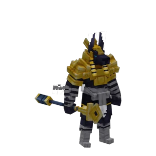
Morts-vivants
Anubis
Seigneur du tombeau ensablé
Biome
Désert
Repaire
Tombeau d'Anubis
Une pyramide à demi enfouie sous le sable garde son maître à tête de chacal. Il dort sur son trône, entouré de momies, jusqu'à ce qu'un pilleur ose s'approcher.
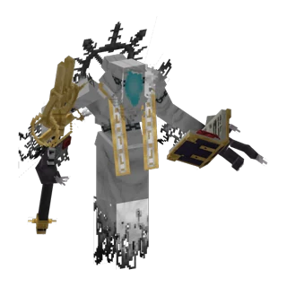
Morts-vivants
Azriel, ange de la mort
Seigneur de la cathédrale noire
Biome
Bois hanté, Steppe embrasée
Repaire
Cathédrale noire
Sous les vitraux noirs d'une nef effondrée, un ange aux ailes funèbres attend devant son autel. Ses sbires errent dans la nef : n'y entre jamais seul.
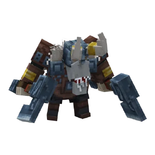
Vikings
Bjorn l'Exalté
Chef du camp viking
Biome
Taïga, Forêt boréale
Repaire
Camp viking
Derrière la palissade d'un camp du Nord, sous le toit en carène de la maison longue, Bjorn règne sur ses guerriers. Les plus braves viennent l'y défier.
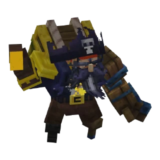
Pirates
Le capitaine DeadBeard
Le maître de la crique
Biome
Plage dorée, Plage tropicale
Repaire
Crique des pirates
Un trois-mâts éventré s'est échoué sur la plage, et son capitaine règne encore sur la dunette. Son équipage garde le sable, où se cache peut-être une clé enterrée.
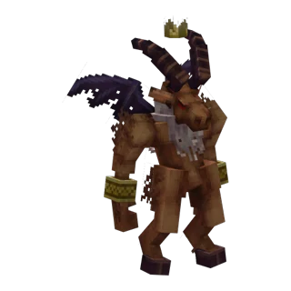
Démons
Capra
Le démon-bouc de l'autel
Biome
Steppe embrasée, Sources ardentes
Repaire
Autel du bouc
Sur un autel noirci entouré de braseros, un porcelet innocent attend au centre du cercle. Ceux qui troublent le rituel voient se lever le démon-bouc.
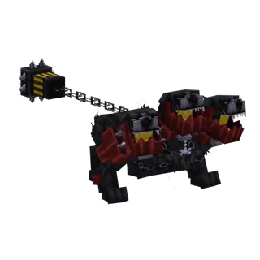
Bêtes et monstres
Cerbère
Gardien de la porte des Enfers
Biome
Steppe embrasée, Sources ardentes
Repaire
Porte des Enfers
Une gueule de basalte s'ouvre dans les terres brûlées, et trois têtes y montent la garde. Ses chiens des enfers ne laissent jamais un intrus repartir tranquille.
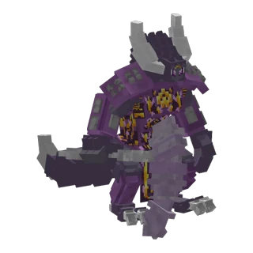
Démons
Démon du chaos
Maître de la forteresse ardente
Biome
Caldeira, Coulées de lave
Repaire
Forteresse du chaos
Au sommet d'une butte de basalte fendue par la lave se dresse un bastion en étoile. Celui qui foule son arène voit le démon surgir dans une explosion de flammes.
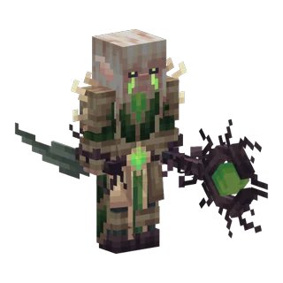
Elfes
La Druidesse elfe
Gardienne de l'arbre lunaire
Biome
Forêt lunaire
Repaire
Arbre lunaire colossal
Perchée dans les branches de l'arbre blanc de la forêt lunaire, elle veille sur son peuple. Les gardiens elfes qui l'entourent ne tolèrent aucun étranger.
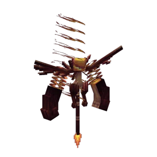
Démons
Flamental
Élémentaire de feu des volcans
Biome
Caldeira, Coulées de lave
Repaire
Errant
On ne le trouve dans aucun repaire : il marche au hasard des coulées de lave, flamme vivante qui embrase tout sur son passage.
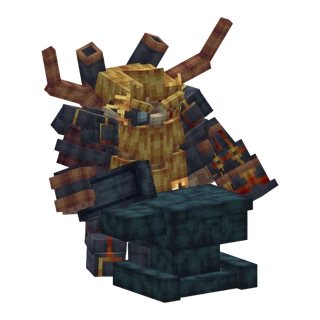
Nains
Le Forgeron nain
Gardien de la porte scellée
Biome
Pics de granit, Falaises blanches
Repaire
Porte scellée
Devant une porte que personne n'a rouverte depuis des siècles, le dernier forgeron du royaume nain monte la garde, marteau au poing. Ses enclumes chauffent encore.
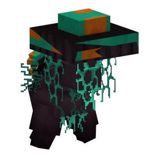
Esprits et féerique
Glume
L'esprit des champignons géants
Biome
Île aux champignons, Forêt sombre
Repaire
Champignons géants
Sous les chapeaux des champignons géants, une silhouette coiffée de mousse glisse entre les spores. Ne te fie pas à son air discret.
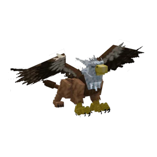
Bêtes et monstres
Le Griffon
Seigneur des aiguilles de pierre
Biome
Pics de granit, Falaises blanches
Repaire
Aire du griffon
Au sommet d'une aiguille de roche sculptée par le vent, le griffon couve son aire. Celui qui gravit la corniche doit être prêt à affronter ses serres.
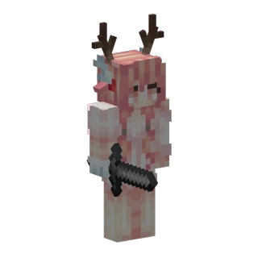
Esprits et féerique
Hana
Gardienne des sakuras
Biome
Vallée des sakuras, Jardin des fées
Repaire
Sakura colossal
Au pied du cerisier géant, sur un tapis de pétales roses, une jeune fille aux bois de cerf attend, une lame à la main. La beauté du lieu ne doit pas te faire baisser ta garde.
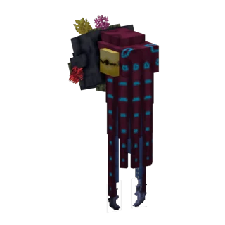
Créatures marines
Le Kraken
Terreur des épaves englouties
Biome
Abysses, Récif des merveilles
Repaire
Épaves
Les navires coulés ne sont pas abandonnés : des tentacules immenses s'enroulent autour de leurs coques. Plonge vers un trésor englouti à tes risques et périls.
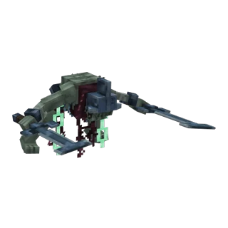
Morts-vivants
Kriger
Le gardien enchaîné
Biome
Plaines, Forêt
Repaire
Église du gardien
Dans une église en ruine, un guerrier drapé et chargé de chaînes dort d'un sommeil de pierre. Approche-toi trop, et il se réveille.
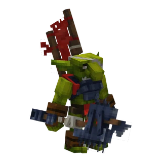
Gobelins
Kur
Le seigneur gobelin corrompu
Biome
Plaines, Forêt lunaire
Repaire
Camp gobelin, Faille corrompue
Plus grand, plus fort et plus cruel que ses congénères, Kur surgit parfois dans les camps gobelins. On le dit né de la faille corrompue qui ronge la forêt lunaire.
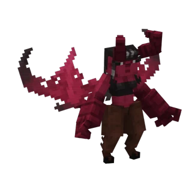
Démons
Lillith
La démone du cercle
Biome
Bois hanté
Repaire
Cercle d'invocation
Au cœur du bois hanté, une clairière de cendres s'ouvre autour d'un cercle de pierres calcinées. Le rituel inachevé n'attend qu'un imprudent pour faire surgir la démone.
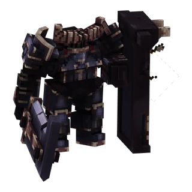
Humains
Magnus
Le champion de l'arène
Biome
Lande de bruyère, Hautes terres rocheuses
Repaire
Arène de Magnus
Au centre d'une arène de pierre, un feu de camp éteint attend qu'on le rallume. Ceux qui l'osent voient Magnus tomber du ciel, épée au poing.
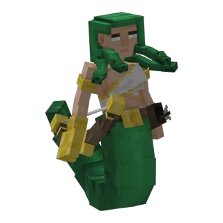
Bêtes et monstres
Méduse
La gorgone du temple
Biome
Falaises blanches, Falaises côtières
Repaire
Temple de Méduse
Entre les colonnes d'un temple en ruine au bord des falaises se dressent des statues aux visages terrifiés. Ne croise jamais son regard.
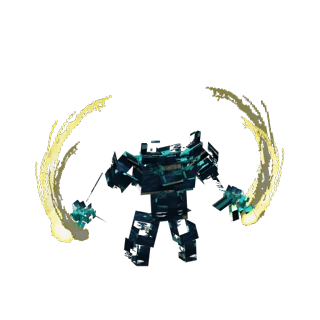
Golems et êtres minéraux
Le Méga-Gardien
Le colosse des cités antiques
Biome
Grottes abyssales
Repaire
Cité antique
Tout au fond du monde, parmi les ruines des cités antiques, un gardien plus grand que tous les autres guette le moindre bruit. Avance sans un son.
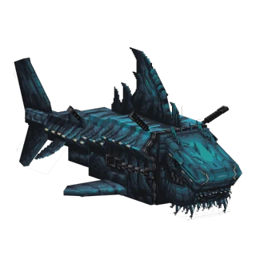
Créatures marines
Le Mégalodon
Le requin des profondeurs
Biome
Abysses, Récif des merveilles
Repaire
Errant
Il n'a pas de repaire : il chasse en pleine mer, là où l'eau devient sombre. Si une ombre immense passe sous toi, nage vers la rive.
Bêtes et monstres
Le Minotaure
Gardien du labyrinthe
Biome
Falaises blanches, Prairie alpine
Repaire
Labyrinthe du Minotaure
Aucun labyrinthe ne ressemble à un autre, et tous mènent à la même arène. Le Minotaure connaît chaque raccourci : il te coupera la route.
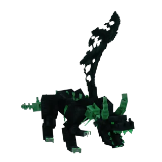
Morts-vivants
Mortos
Le dragon revenu d'entre les morts
Biome
Marais maudit
Repaire
Cimetière du dragon
Sur un îlot de boue au milieu du marais repose le squelette d'un dragon colossal. Mais ses os ne dorment pas tous.
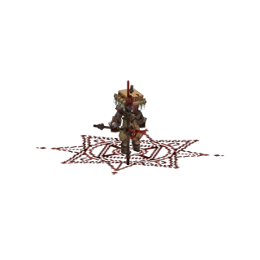
Morts-vivants
Oblivion
L'ombre du marais maudit
Biome
Marais maudit
Repaire
Errant
Les nuits les plus noires, un cercle de runes rouges s'allume sur la vase du marais maudit. Ce qui en sort n'a plus de nom.
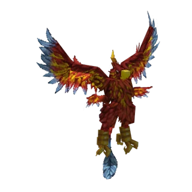
Bêtes et monstres
Le Phénix
L'oiseau de feu immortel
Biome
Steppe embrasée, Sources ardentes
Repaire
Nid du Phénix
Au sommet d'un pic de basalte veiné de magma, le Phénix couve son nid ardent. On dit qu'il renaît toujours de ses cendres.
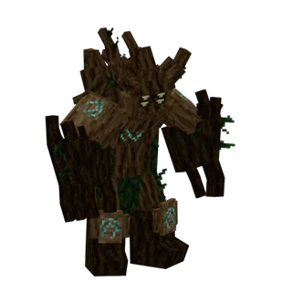
Esprits et féerique
Le Roi des ents
Souverain des forêts anciennes
Biome
Forêts, Jungle ancestrale
Repaire
Chêne colossal
Au pied des chênes colossaux s'éveille un roi d'écorce, entouré de sa cour de guerriers et de sorciers sylvestres. Toute la forêt se lève quand on menace ses arbres.
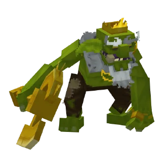
Gobelins
Le Roi gobelin
Chef des pillards verts
Biome
Plaines, Savane
Repaire
Camp gobelin
Au milieu de son camp de bric et de broc, le roi gobelin commande une horde armée de poêles et de fourches. Là où il trône, sa bande n'est jamais loin.
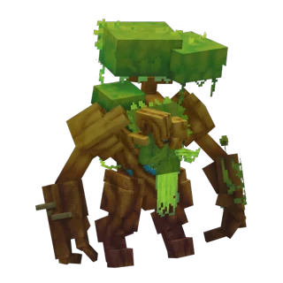
Esprits et féerique
Skog
L'esprit du cœur de la forêt
Biome
Forêt, Taïga ancienne
Repaire
Cœur de la forêt
Au plus profond des bois, une clairière sacrée abrite l'esprit de la forêt. Il protège chaque arbre comme une partie de lui-même.
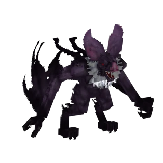
Bêtes et monstres
Tiamat
Le dragon des ténèbres
Biome
Grottes de cristal, Grottes abyssales
Repaire
Antre de Tiamat
Un cercle de pierres noircies marque l'entrée d'un puits qui plonge loin sous terre. Tout au fond, le dragon dort au-dessus de sa caverne, et il tombe sur ceux qui le réveillent.
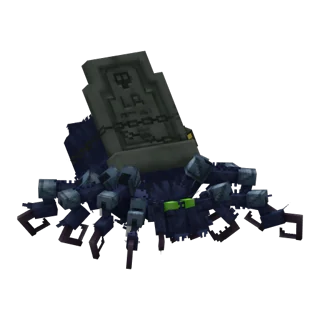
Bêtes et monstres
Voras
La reine araignée du marais
Biome
Marais maudit
Repaire
Nid de Voras
Dans un bosquet d'arbres morts tendu de toiles épaisses, la reine araignée guette ses proies. Chaque fil qui vibre la prévient de ton arrivée.
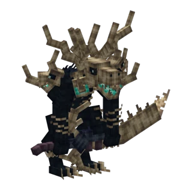
Morts-vivants
Le Wendigo
Le chasseur des nuits glacées
Biome
Taïga ancienne, Forêt boréale
Repaire
Clairière du Wendigo
Il existe une clairière glacée où rien ne repousse : c'est là qu'il se terre. Certaines nuits pourtant, il quitte sa tanière et rôde entre les grands conifères.
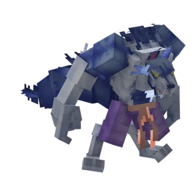
Bêtes et monstres
Wolfebersa
Le loup-garou berserker
Biome
Bois hanté
Repaire
Tanière du berserker
Sous les racines d'un arbre géant, un tertre creusé abrite une bête à moitié homme, à moitié loup. Sa fureur ne connaît aucune limite.
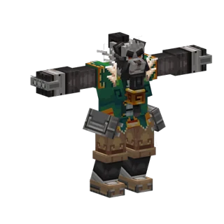
Esprits et féerique
Wu, maître d'encre
Le maître du pavillon
Biome
Bambouseraie brumeuse
Repaire
Pavillon de l'encre
Derrière une porte de lune, au bord d'un étang à lotus, un pavillon abrite la table du calligraphe. Qui touche à ses pinceaux réveille le maître d'encre.
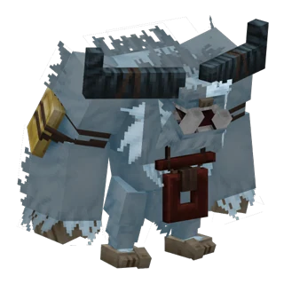
Bêtes et monstres
Le Yéti
Le colosse des neiges
Biome
Forêt boréale
Repaire
Grotte du Yéti
Une cascade gelée cache l'entrée de sa grotte, au cœur de la forêt boréale. Dans le froid et le silence, le Yéti n'aime pas être dérangé.
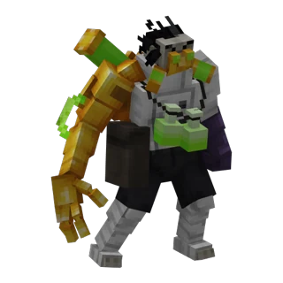
Sorciers et alchimistes
Zahar
L'alchimiste fou du marais
Biome
Marais maudit
Repaire
Laboratoire interdit
Dans une cabane sur pilotis noyée de vapeurs, un alchimiste poursuit des expériences que nul n'aurait dû tenter. Ce qu'il a créé rôde encore autour du laboratoire.
Aucune légende ne correspond. Elle se cache peut-être encore…
Les troupes que tu croiseras, peuple par peuple.
Elfes
Forêt lunaire · Jardin des féesMené par la Druidesse elfe
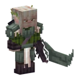
Épéiste elfe
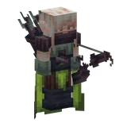
Rôdeur elfe
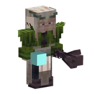
Mage elfe
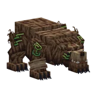
Ours runique
Nains
Pics de granit · MinesMené par le Forgeron nain
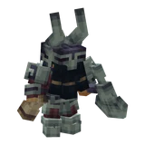
Chevalier nain
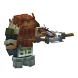
Chasseur nain
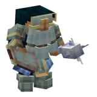
Clerc nain
Gobelins
Plaines · Savane · SteppeMené par le Roi gobelin et Kur
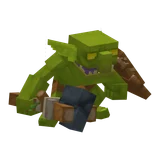
Guerrier gobelin
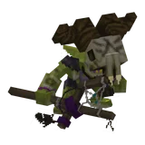
Chaman gobelin
Vikings
Taïga · Forêt boréaleMené par Bjorn l'Exalté
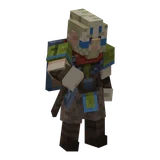
Guerrier viking
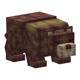
Ours brun
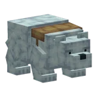
Ours polaire
Pirates
Côtes · AbyssesMené par le capitaine DeadBeard et le capitaine Octo
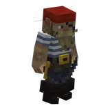
Pirate de l'équipage
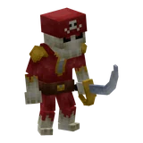
Pirate sabreur
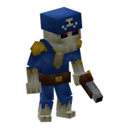
Pirate tireur
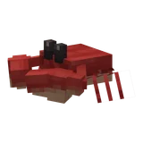
Crabe pirate
Morts-vivants
Marais maudit · Ossuaires · Tours en ruineMené par Oblivion
Momie
Squelette de la tour
Mineur mort-vivant
Zombie mutant
Démons
Bois hanté · CaldeiraMené par Lillith et le Démon du chaos
Diablotin
Piglin mage
Piglin maraudeur
Faucheur démoniaque
Esprits de la forêt
Forêts · Vallée des sakuras · Île aux champignonsMené par Skog et Glume
Ent guerrier
Ent sorcier
Ent de cerisier
Pousse d'ent
Golems
Grottes · GéodesMené par le Méga-Gardien et le Golem d'améthyste
Golem de diamant
Golem d'émeraude
Golem de quartz
Golem de roche
Et des centaines d'autres créatures, des plaines aux abysses.
0 compagnons à gagner en jeu
Aucun compagnon ne correspond.
Ils s'obtiennent en jeu : butin des boss, quêtes, rangs, œufs trouvés en exploration… Le détail arrivera avec l'ouverture.